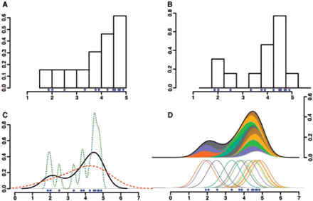

We use modern genomics techniques and high-throughput experiments to explore biological systems. We can leverage computational tools to help answer biological problems that were previously intractable. We aim to combine computational approaches with high-throughput biological assays to better understand the whole human transcriptional regulatory system.
Understanding gene regulation at the transcriptional level is critical to understanding complex biological systems and human disease. In virtually all organisms gene regulation is mediated by a “regulatory code” in which distinct combinations of specific transcription factors collaborate to regulate the expression of individual genes.
This code is complex and not readily obvious from sequences alone.
It likely involves many cis-regulatory modules that exist both upstream and within genes.
In addition, mounting evidence suggests that major differences between individuals and species lie at the level of gene regulation and that changes in cis-regulatory sequences are responsible for these effects.
Our research aims to explore this regulatory code by examining the cis-regulatory elements in the human genome.

{{ post.date | date: "%B %d, %Y" }} - {{ post.title }}
{% endfor %}Our offices are located in the Palmer Commons Building on the edge of central campus. The lab is located on the 4th floor of the Medical Science Research Building I.